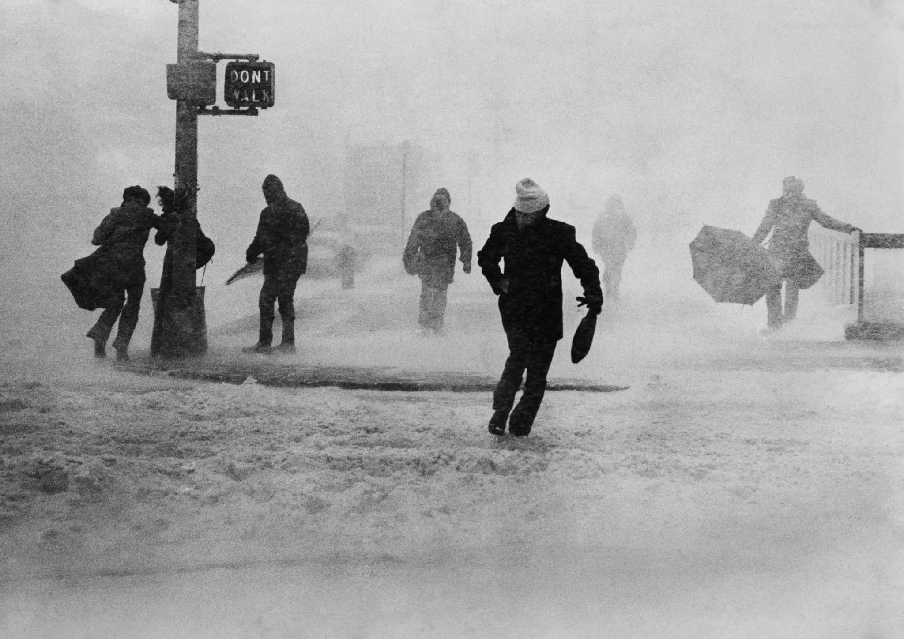
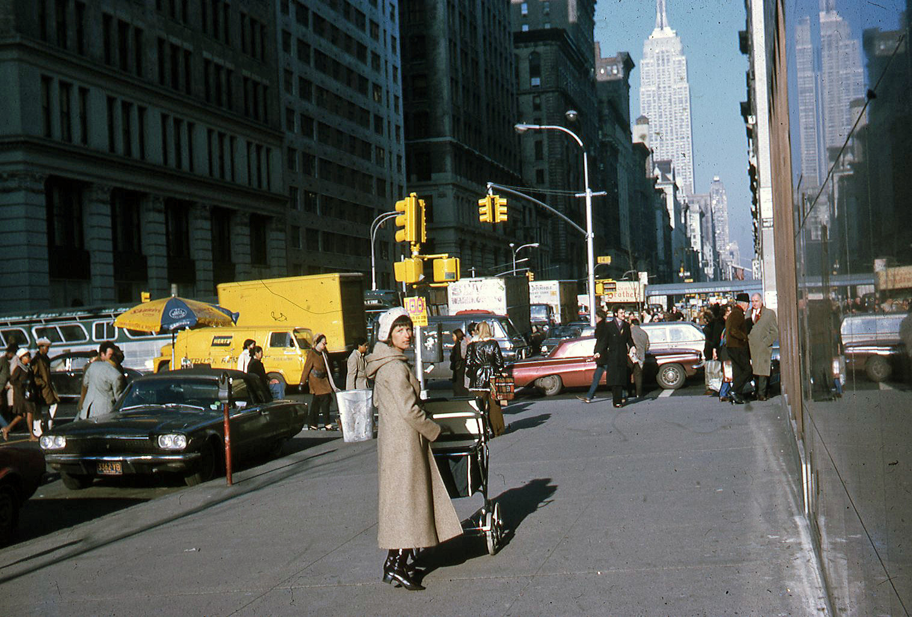
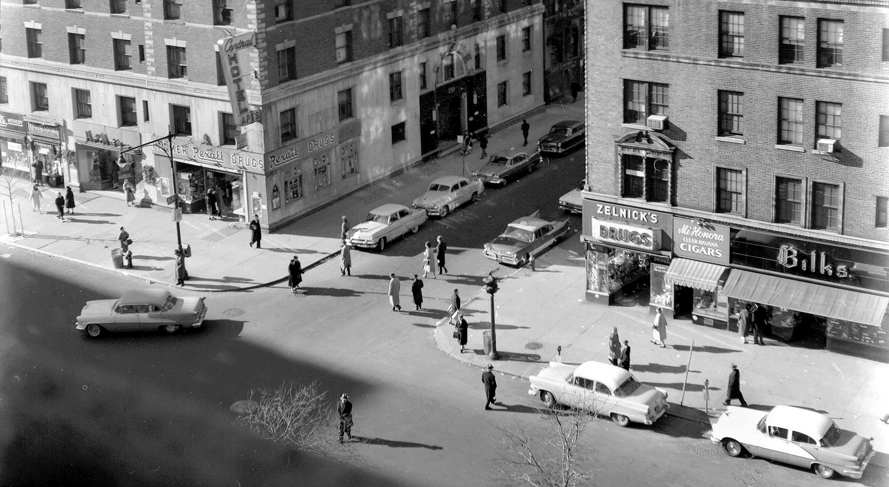

The Burger Joint, 1983. Amazing.
The Burger Joint, 1983. Amazing.

Premiere of “The Exorcist” at the Paramount Theatre, 1974.

Hanging out in the middle of Broadway, 1959
Pedestrians on 6th Ave, near 8th Street, 1980
NYC cops in 1980

Free range kid, 1979

Spider, 1979
Unjolly St Nick on 34th Street

1970s snowstorm
Broadway and 12th, 1970.

5th Ave near 14th Street, 1970

Christopher Street, by the West Side Drive, 1970

Central Park, 1970

Building the WTC, 1970

The height of fashion, 1970s Times Square
125th and Broadway, 1975

Subway, 1975

Eric B & Rakim On 14th Street in New York City, circa 1989. Photo by Michael Ochs

The Beacon, in the bad old days. Chris 217 on the wall.

Broadway and 88th (looking southwest) in 1960